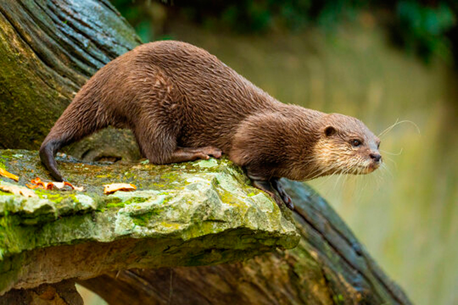
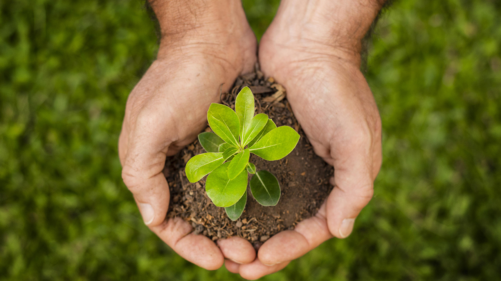
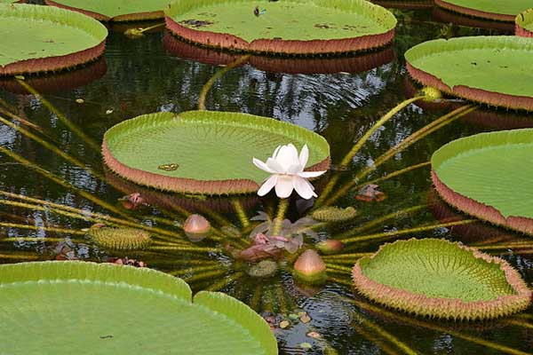
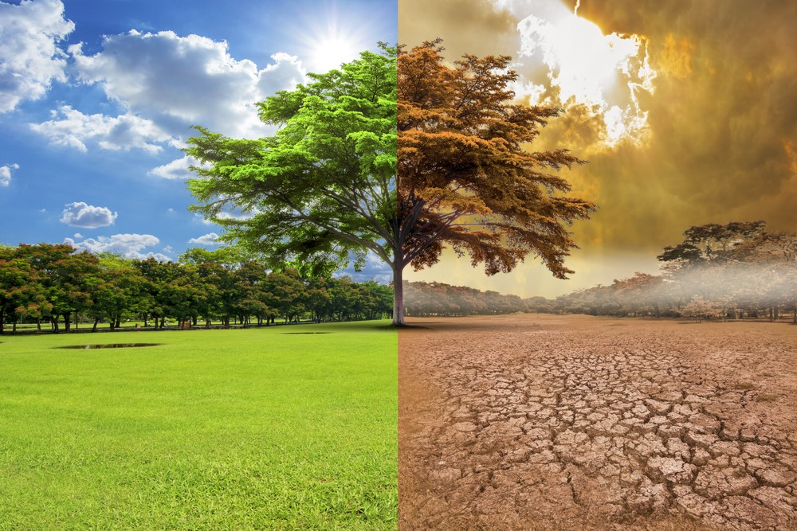
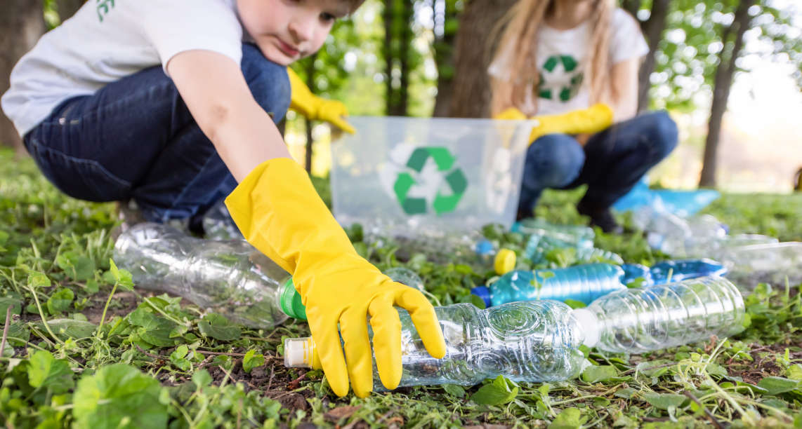
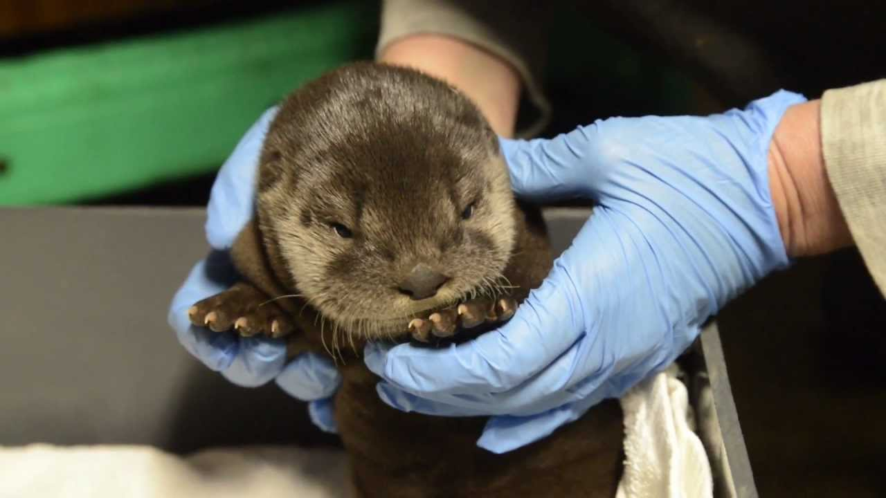
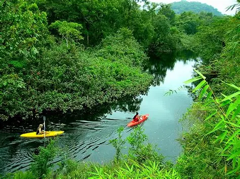
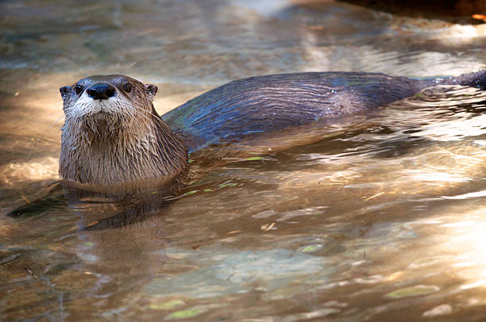

Redirige el enfoque
Orienta la investigación hacia el estudio de especies clave en los ecosistemas acuáticos, generando conocimiento valioso sobre su rol ecológico.
Bienvenido a la mejor página del mundo mundial sobre nutriología 🦦 #solofactos
Es importante evaluar qué ventajas tiene este cambio para la humanidad. Aunque me gustaría que esto solo se tratara de corregir un error lingüístico, va mucho más allá, ya que transforma nuestra forma de ver el mundo. Poner a las nutrias en el centro de la nutriología sentará un precedente.

Orienta la investigación hacia el estudio de especies clave en los ecosistemas acuáticos, generando conocimiento valioso sobre su rol ecológico.

Impulsa estudios en biología, conservación y ecología, creando nuevas oportunidades para científicos y estudiantes apasionados por la vida silvestre.

Profundiza en el conocimiento de los ecosistemas acuáticos, revelando cómo las nutrias contribuyen a la salud de ríos, lagos y océanos.

Proporciona información sobre el impacto del cambio climático en especies sensibles, ayudando a diseñar estrategias de adaptación y mitigación.

Genera una mayor conciencia sobre la importancia de las nutrias y su papel en el equilibrio de los ecosistemas acuáticos.

Incrementa la participación de comunidades en proyectos de conservación y monitoreo de nutrias en su entorno natural.

Crea oportunidades laborales en ecoturismo, monitoreo de especies y educación ambiental, beneficiando a comunidades locales.

Contribuye a la mejora de la calidad del agua en ríos y humedales, ya que las nutrias son indicadores de ecosistemas saludables.